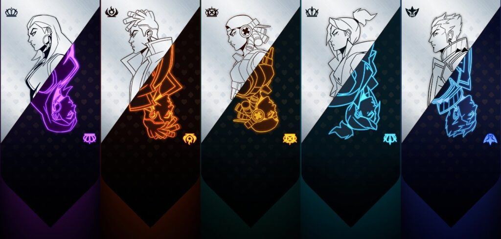

Each of the aforementioned roles is used to describe the specialties of the agents and their respective kits, all of which we will describe briefly. However, it is also important to note beforehand that roles do not have to constraint your playstyles. After all, VALORANT, in its very essence, is just a game of clicking heads. If you can click heads better than your opponent, then you will most likely win the game regardless of what role you are using. Agent roles are in the game to simply give players a heads up on how to use their kit for the benefit of the team.
Before a match starts, players will have an opportunity to select the agent they wish to play, referred to in-game as agent select. Assembling a well-balanced line-up of agents can go a long way to improving the chances of winning a match.
Within the game, agents are broken down into four general roles: Sentinels; Controllers; Initiators; and Duelists. These roles are then broken down into more specialised positions such as Support, In-game Leader, Entry Fragger, Lurker, Recon, and Crowd Control. Each role is defined by the abilities the agent brings to the match.
DUELIST
Duelists are the offensive experts in VALORANT with abilities that allow them to be aggressive and self-sufficient when creating opportunities to engage with opponents. There are currently six Duelists in the game: Jett; Phoenix; Raze; Reyna; Yoru and Neon.
Duelists are expected by their teammates to be proactive and are the stars within the team that garner the most amount of kills. They will typically fulfill the role of Entry Fragger, being the first person to enter an area of the map in contention and perform high-risk, high-reward actions to gain an advantage. The Duelist role is particularly volatile and leads to players experiencing a feast-or-famine scenario in performance, thus teams should give these roles to teammates with excellent aim.
